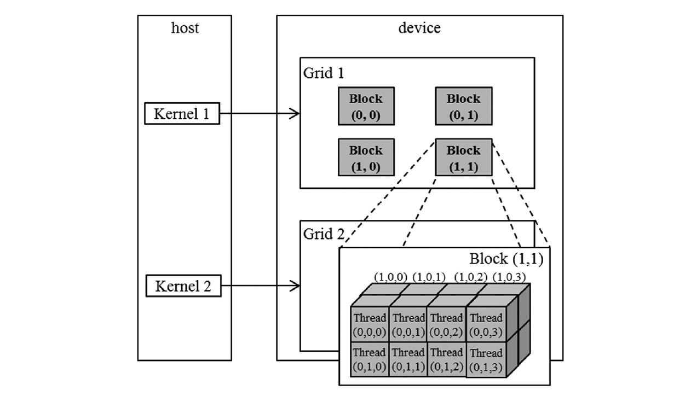
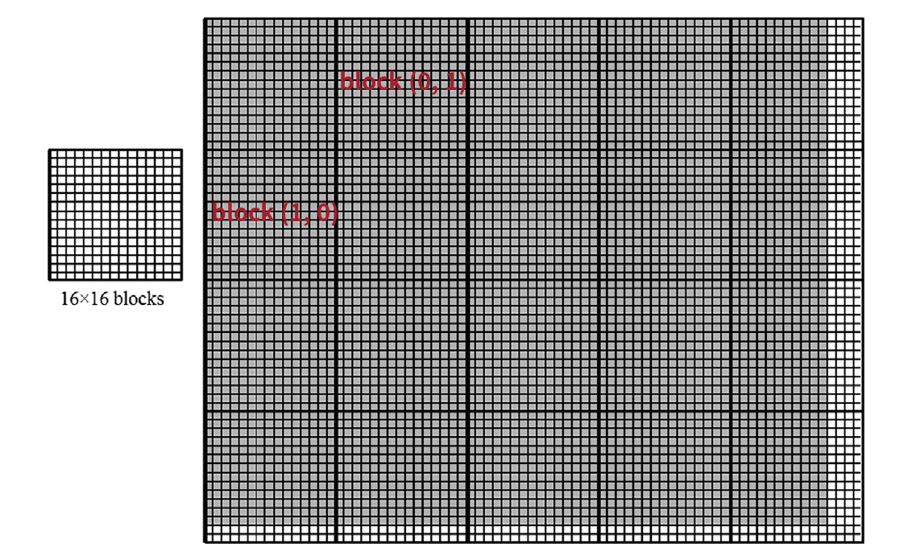
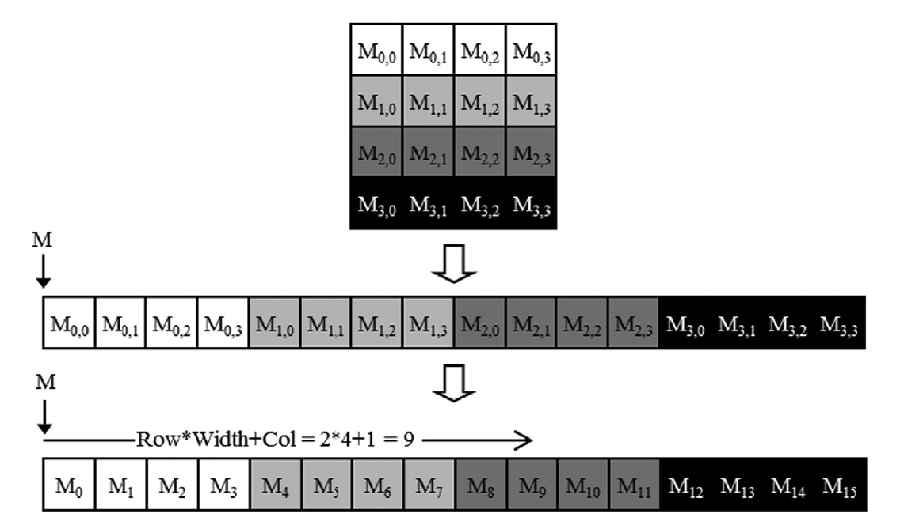
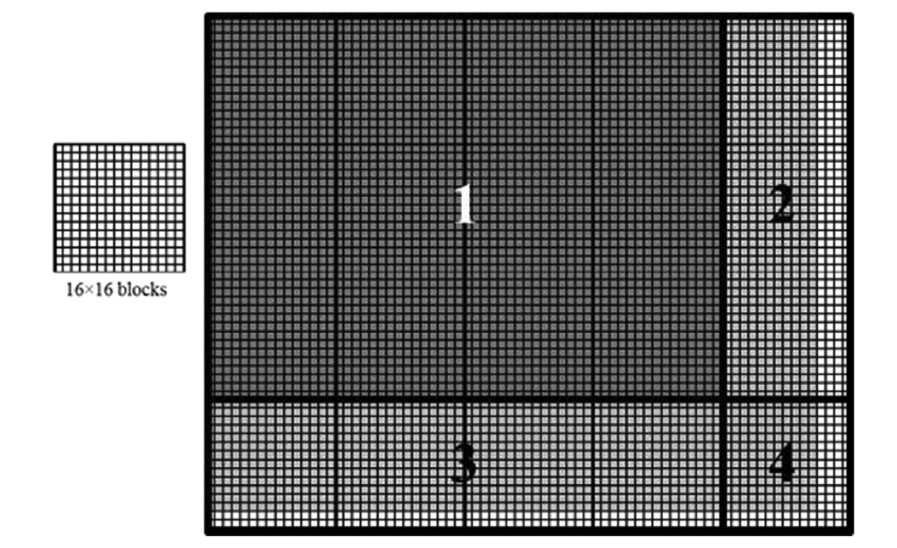
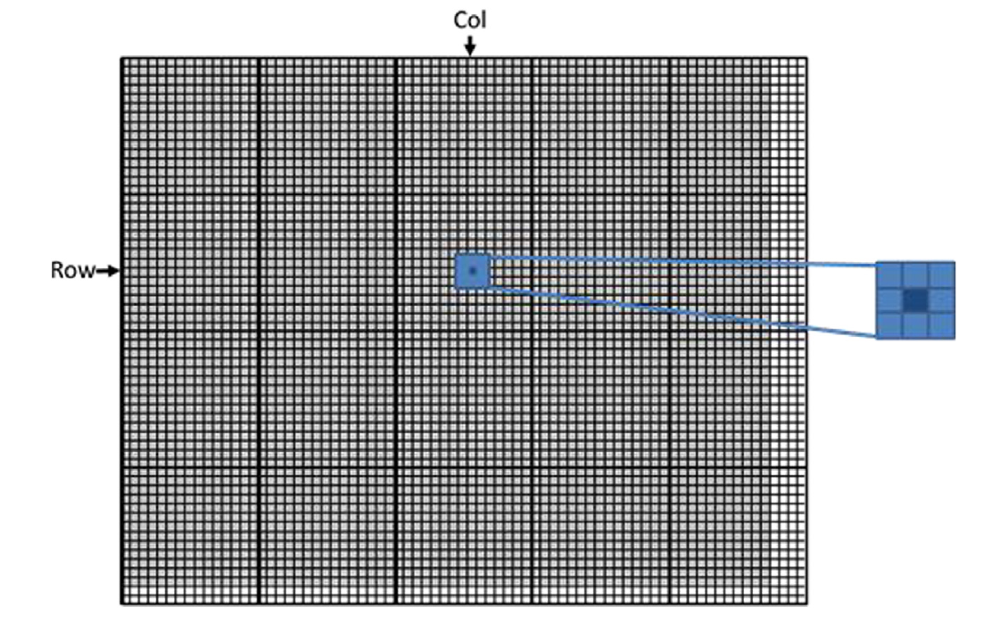
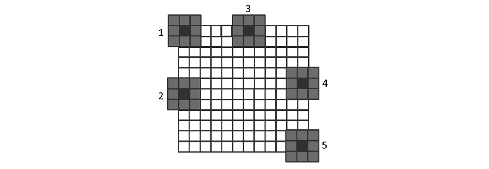
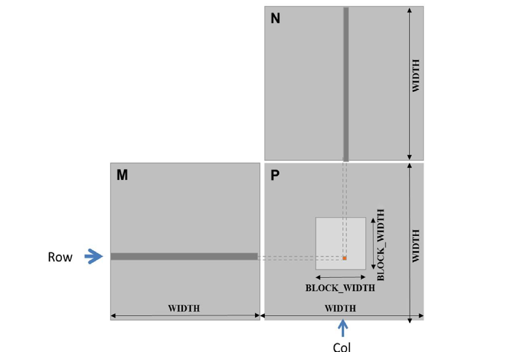

多维网格和矩阵乘法¶
学习目标¶
- 学习在CUDA里如何使用线程和块来处理多维数组。
- 实现简单的矩阵乘法内核
在前面的课程中，我们学习了如何编写一个简单的向量加法程序，通过调用内核函数启动一个一维线程网格，以处理一维数组的元素。内核指定了由网格中的每个个体线程执行的语句。
接着，我们将更一般地了解线程的组织方式，以及如何使用线程和块来处理多维数组。本章包括多个示例，包括将彩色图像转换为灰度图像、对图像进行模糊处理和矩阵乘法。
1. 多维网格组织¶
在 CUDA 中，网格中的所有线程都执行相同的内核函数，并且它们依赖于坐标（即 线程索引）以相互区分并识别要处理的数据的适当部分。
这些线程被组织成两级层次结构：一个网格（Grid）由一个或多个块（Block）组成，每个块由一个或多个线程（Thread）组成。
blockIdx（内置变量）：块中的所有线程共享相同的块索引。threadIdx（内置变量）：每个线程在块内拥有的唯一线程索引。gridDim和blockDim（内置变量）：在内核调用语句中，执行配置参数指定了网格的维度和每个块的维度。
通常，一个网格是一个三维（3D）的块数组，每个块是一个三维（3D）的线程数组。在调用内核时，程序需要指定每个维度中网格和块的大小。这是通过内核调用语句的执行配置参数（在 <<<...>>> 中）指定的：
- 第一个参数：指定了网格在块数（Blocks）上的维度。
- 第二个参数：指定了每个块在线程数（Threads）上的维度。
这两个参数都具有 dim3 类型，这是一个包含 x、y 和 z 三个元素的整数向量类型。可以通过将未使用的维度的大小设置为 1 来使用少于三个维度（即 1D 或 2D）。
1.1 常见的核函数配置示例¶
例如，以下主机代码可用于调用 vecAddKernel() 内核函数，并生成一个由 32 个块组成的一维网格，每个块由 128 个线程组成。网格中线程的总数为 128 \times 32 = 4096：
dim3 dimBlock(128, 1, 1);
dim3 dimGrid(32, 1, 1);
vecAddKernel<<<dimGrid, dimBlock>>>(d_a, d_b, d_c);
对应的Numba CUDA代码为：
# 定义 Block 和 Grid 的维度（对应原生的 dim3）
dimBlock = (128, 1, 1) # 或者直接写 128（对于一维情况）
dimGrid = (32, 1, 1) # 或者直接写 32
# 启动核函数（语法与 C++ 的 <<<...>>> 完全一致）
vecAddKernel[dimGrid, dimBlock](d_a, d_b, d_c)
请注意，dimBlock 和 dimGrid 是由程序员定义的主机代码变量。只要它们具有 dim3 类型，它们就可以具有任何合法的 C 变量名。例如，以下语句实现了与上述语句相同的结果：
dim3 cat(128, 1, 1);
dim3 dog(32, 1, 1);
vecAddKernel<<<dog, cat>>>(d_a, d_b, d_c);
网格和块的维度也可以从其他变量计算。例如，内核调用可以写成如下形式：
dim3 dimBlock(256, 1, 1);
dim3 dimGrid((n + dimBlock.x - 1) / dimBlock.x, 1, 1);
vecAddKernel<<<dimGrid, dimBlock>>>(d_a, d_b, d_c, n);
对应的Numba CUDA代码为：
dimBlock = (256, 1, 1)
dimGrid = ((n + dimBlock[0] - 1) // dimBlock[0], 1, 1)
vecAddKernel[dimGrid, dimBlock](d_a, d_b, d_c, n)
这允许块的数量随着向量的大小 n 而变化，以确保网格有足够的线程覆盖所有向量元素。在这个例子中，程序员选择将块大小固定为 256。在内核调用时，变量 n 的值将确定网格的维度：
- 如果 n = 1000，网格将由 4 个块组成。
- 如果 n = 4000，网格将由 16 个块组成。
一旦启动了网格，网格和块的维度将保持不变，直到整个网格执行完毕。
1.2 一维简写形式¶
为了方便起见，CUDA 提供了一种特殊的快捷方式，用于调用具有一维（1D）网格和块的内核。可以使用算术表达式而不是 dim3 变量来指定 1D 配置。在这种情况下，CUDA 编译器简单地将算术表达式视为 x 维度，并假定 y 和 z 维度为 1：
vecAddKernel<<<32, 128>>>(d_a, d_b, d_c);
对应的Numba CUDA代码为：
vecAddKernel[32, 128](d_a, d_b, d_c);
熟悉 C++ 的读者会意识到，这种简写是通过 C++ 构造函数和默认参数实现的。dim3 构造函数的参数默认值为 1。当在期望 dim3 的地方传递一个单一值时，该值将传递给第一个参数（x），而 y 和 z 将采用默认值 1。
在内核函数中，gridDim 和 blockDim 变量的 x 字段根据执行配置参数的值进行了预初始化。例如，如果 n = 4000，在内核中对 gridDim.x 和 blockDim.x 的引用将分别得到 16 和 256。请注意，在内核函数中，这些内置变量的名称是 CUDA C 规范的一部分，不能更改。
1.3 硬件维度限制¶
- 网格限制：在现代 CUDA C 中，
gridDim.x允许的值范围从 1 到 2^{31}-1（设备的计算能力低于 3.0 的允许范围在 1 到 2^{16}-1 之间），gridDim.y和gridDim.z的值范围从 1 到 2^{16}-1（65,535）。 - 块索引范围：同一块中的所有线程共享相同的
blockIdx值。在块之间，blockIdx.x的范围从 0 到 \text{gridDim.x}-1，blockIdx.y从 0 到 \text{gridDim.y}-1，blockIdx.z从 0 到 \text{gridDim.z}-1。 - 块内线程数限制：在当前的 CUDA 系统中，一个块的总大小限制为 1024 个线程。这些线程可以以任何方式分布在三个维度上，只要总线程数（x \times y \times z）不超过 1024。例如：
- 允许：
(512, 1, 1)、(8, 16, 4)、(32, 16, 2) - 不允许：
(32, 32, 2)（因为 32 \times 32 \times 2 = 2048 > 1024）
网格及其块不需要具有相同的维度。网格的维度可以高于其块，反之亦然。例如，使用以下主机代码可以创建一个 gridDim 为 (2, 2, 1) 且 blockDim 为 (4, 2, 2) 的网格：
dim3 dimGrid(2, 2, 1);
dim3 dimBlock(4, 2, 2);
myKernel<<<dimGrid, dimBlock>>>(...);

上图中的网格由四个块组成，排列成一个 2x2 的数组。每个块都标有 (blockIdx.y, blockIdx.x)。例如，块 (1,0) 具有 blockIdx.y 为 1 和 blockIdx.x 为 0。请注意，块和线程标签的排序是最高维度先出现的。此表示法使用的排序与用于设置配置参数的 C 语句中的排序相反，其中最低维度首先出现。在标记块时采用的这种反向排序在说明线程坐标映射到访问多维数据的数据索引时更为合适。
每个 threadIdx 也由三个字段组成：x 坐标 threadIdx.x，y 坐标 threadIdx.y 和 z 坐标 threadIdx.z。图说明了块内线程的组织。在这个例子中，每个块被组织成一个 4x2x2 的线程数组。由于网格中的所有块都具有相同的维度，我们只展示其中一个。上图中将块 (1,1) 展开，显示其 16 个线程。例如，线程 (1,0,2) 具有 threadIdx.z 为 1，threadIdx.y 为 0，以及 threadIdx.x 为 2。请注意，在这个例子中，我们有 4 个包含 16 个线程的块，总共有 64 个线程在网格中。我们使用这些较小的数字是为了使图示简单化。典型的 CUDA 网格包含数千到数百万个线程。
注意标签的顺序：在 CUDA 内核中标记块和线程时，通常最高维度先出现（如
(z, y, x)或(y, x)）。此表示法使用的排序与用于设置配置参数的 C 语句（x, y, z）相反。在标记块时采用这种反向排序，在说明线程坐标映射到多维数据索引时更为直观。
2. 将线程映射到多维数据¶
1D、2D 或 3D 线程组织的选择通常基于数据的自然结构。例如，图像是像素的二维数组。使用由 2D 块组成的 2D 网格处理图像中的像素通常最为方便。
假设我们要处理一张大小为 62 \times 76 的图片 P（垂直 y 方向有 62 个像素，水平 x 方向有 76 个像素，依照 C 语言多维数组索引约定记为 P[y][x] 或 P_{y,x}）。
我们将按降序引用多维数据的维度：先是 z 维度，然后是 y 维度，依此类推。例如，对于垂直或 y 维度有 n 个像素，水平或 x 维度有 m 个像素的图片，我们将其称为 n x m 图片。这遵循了 C 语言多维数组索引的约定。例如，在文本和图中，为了简洁起见，我们可以将 P[y][x] 称为 P_{y,x}。不幸的是，这种顺序与在 gridDim 和 blockDim 维度中排列数据维度的顺序相反。当我们基于将由其线程处理的多维数组定义线程网格的维度时，这种差异可能会特别令人困惑。

如果我们决定使用一个 16 \times 16 的线程块（即 blockDim.x = 16, blockDim.y = 16）：
- y 方向需要块数：\lceil 62 / 16 \rceil = 4 个块
- x 方向需要块数：\lceil 76 / 16 \rceil = 5 个块
- 总共需要启动 4 \times 5 = 20 个块。
每个线程被分配处理一个像素，其 y（行）和 x（列）坐标由其 blockIdx、blockDim 和 threadIdx 变量的值派生：
- 垂直（行）坐标：
row = blockIdx.y * blockDim.y + threadIdx.y - 水平（列）坐标：
col = blockIdx.x * blockDim.x + threadIdx.x
例如，由块 (1, 0) 的线程 (0, 0) 处理的像素元素 P_{in} 位置计算如下：
即对应图片中的 P[16][0]。
2.1 边界处理与主机代码¶
请注意，在上图中，y方向多了两个额外的线程，x方向多了四个额外的线程。也就是说，我们将生成64x80=5120个线程来处理62x76的像素。所以图像处理核函数会使用if语句来测试线程的垂直和水平索引是否落在有效的像素范围内。
我们假设主机代码使用整数变量n来跟踪y方向的像素数，另一个整数变量m来跟踪x方向的像素数。我们进一步假设输入图片数据已经被复制到设备全局内存，并且可以通过指针变量Pin_d访问。输出图片已经在设备内存中分配，并且可以通过指针变量Pout_d访问。以下主机代码可用于调用一个2D的核函数colorToGrayscaleConversion来处理图片，如下所示：
// 设定固定的块大小
dim3 dimBlock(16, 16, 1);
// 根据图片尺寸动态计算网格大小（向上取整）
dim3 dimGrid((width + dimBlock.x - 1) / dimBlock.x, (height + dimBlock.y - 1) / dimBlock.y, 1);
// 调用核函数
colorToGrayscaleConversion<<<dimGrid, dimBlock>>>(Pin_d, Pout_d, width, height);
在这个例子中，为了简单起见，我们假设块的维度固定为16x16。另一方面，网格的维度取决于图片的维度。要处理一个1500x2000（300万像素）的图片，我们将生成11,750个块：在y方向上有94个块，在x方向上有125个块。在核心函数中，对于gridDim.x、gridDim.y、blockDim.x和blockDim.y的引用将分别得到125、94、16和16。
2.2 内存空间与多维数组线性化¶
现代计算机的内存空间具有“平（Flat）”的组织结构。每个正在运行的应用程序访问的内存都是一维连续的字节地址。因此，所有多维数组最终在物理内存中都被“展平”为等效的一维数组。
2.2.1 行主序¶
在 C 语言中，动态分配的多维数组在编译时无法确定其列数，因此无法直接使用 matrix[y][x] 这种高维语法。程序员必须手动将其 线性化（展平）。C 语言严格采用行主序（Row-Major Order）排列，即先把同一行的元素连续存放，再存放下一行。
对于一个 Width 列的 2D 数组，位于第 row 行、第 col 列的元素的 1D 等效偏移索引公式为：
为了提高可读性，我们使用 M_{j,i} 表示 M 中第 j 行和第 i 列的元素。M_{j,i} 等效于 C 表达式 M[j][i]，但稍微更易读。
下图显示了一个例子，其中 4 \times 4 矩阵 M 被线性化为一个包含 16 个元素的 1D 数组：
- 首先是所有第 0 行的元素；
- 然后是第 1 行的四个元素；
- 依此类推。

因此，M 在第 j 行和第 i 列的元素的 1D 等效索引为：
- j \times 4：跳过了第 j 行之前的所有行的元素。
- i 项：选择了第 j 行的部分中的正确元素。
例如，M_{2,1} 的 1D 索引为：
这在图中有所说明，其中 M[9] 是 M_{2,1} 的 1D 等效形式。这是 C 编译器线性化 2D 数组的方式。
2.2.2 列主序¶
另一种线性化2D数组的方法是将同一列的所有元素放入连续的位置。然后，这些列依次放入内存空间。这种排列称为列主排列，被FORTRAN编译器使用。注意，2D数组的列主排列等效于其转置形式的行主排列。CUDA C使用行主排列而不是列主排列。
但是需要注意的是cuBLAS库，为了兼容BLAS接口(由FORTRAN实现)，也使用列主序的方式。这让很多C/C++程序员头疼。不过，在较新的 cuBLASLt（轻量级、高级 cuBLAS 接口）以及 NVIDIA 开源的 CUTLASS 模板库中，NVIDIA 已经引入了对行主序的直接原生支持，允许现代 AI 工程师自由选择更符合 C++ 习惯的内存布局。
2.3 Numba CUDA里二维(N维)数组¶
在 C/C++ 的 CUDA 编程中（如前文所述），多维数组在物理内存中本质上都是一维平铺的。程序员必须手动通过公式（如行主序 \text{index} = \text{row} \times Width + \text{col}）将二维坐标转换为一维偏移量，或者在传参时额外传递宽度、高度等变量，这往往带来了许多繁琐的底层索引计算和心智负担。
相比之下，Numba CUDA 提供了原生且强大的多维数组支持（基于 NumPy 的 ndarray 及其在 GPU 端的映射 DeviceNDArray），彻底改变了这一开发体验。
2.3.1 Numba CUDA 中的多维数组：DeviceNDArray¶
当你在 CPU 端使用 NumPy 创建一个二维数组（例如图像 P 形状为 62 x 76），并通过 cuda.to_device(P) 传输到 GPU 时，Numba 在设备端创建的并不是一个光秃秃的一维指针，而是一个 具有多维结构和步长（Strides）元数据的 DeviceNDArray。
在 Numba CUDA 中，处理二维图像或矩阵时，你 不再需要 手动计算一维线性化索引，可以直接使用多维下标：
import numpy as np
from numba import cuda
@cuda.jit
def color_to_grayscale_2d(pin_d, pout_d):
# 获取 2D 线程在网格中的二维绝对坐标
# 对应 CUDA C 中的 blockIdx.x * blockDim.x + threadIdx.x
col, row = cuda.grid(2)
# 获取数组的形状（Shape）
height, width = pin_d.shape
# 边界检查
if row < height and col < width:
# 直接使用二维下标访问，无需手动计算 row * Width + col
pout_d[row, col] = pin_d[row, col] # 假设进行某种处理
# 主机端调用
height, width = 62, 76
pin_host = np.random.rand(height, width).astype(np.float32)
pout_host = np.empty_like(pin_host)
# 传输到 GPU
pin_d = cuda.to_device(pin_host)
pout_d = cuda.to_device(pout_host)
# 定义 2D 线程块和网格
dimBlock = (16, 16)
dimGrid = (
(width + dimBlock[0] - 1) // dimBlock[0],
(height + dimBlock[1] - 1) // dimBlock[1]
)
# 启动核函数（Numba 自动处理多维网格）
color_to_grayscale_2d[dimGrid, dimBlock](pin_d, pout_d)
cuda.synchronize()
2.3.2 Numba CUDA 多维数组的核心好处¶
与传统的 C/C++ 手动线性化相比，Numba CUDA 的多维数组带来了显著的优势：
2.3.2.1. 摆脱手动线性化公式，代码具备极高的可读性¶
- C/C++ 原生 CUDA：必须显式编写
int idx = row * width + col;，如果涉及 3D 甚至 4D 张量（如深度学习中的批量特征图N-C-H-W），偏移量计算会变得异常复杂且容易出错。 - Numba CUDA：直接支持
array[y, x]或tensor[n, c, h, w]的高维直观语法，编译器会在底层自动将其折算为对应的内存地址偏移。
2.3.2.2. 内置 Shape 与 Stride 元数据，安全性更高¶
- C/C++ 原生 CUDA：指针丢失了维度信息，函数签名通常需要暴露出
width、height等多个额外参数，极易发生越界而不自知。 - Numba CUDA：
DeviceNDArray内部自带.shape和.strides属性。你在核函数内可以随时通过pin_d.shape获取各维度的边界，结合边界检查语句，能够有效防止非法内存访问。
2.3.2.3. 完美兼容 NumPy 的切片与内存布局¶
- Numba CUDA 的数组无缝继承了 NumPy 的切片（Slicing）和步长特性。你可以直接把一个二维矩阵的某一列、某一个子区块（Sub-grid）传给核函数或进行视图操作，而 不需要重新开辟显存去拷贝数据。
- 它默认支持 C 风格的行主序（Row-Major）内存连续性，非常符合现代 C++/Python 程序员的直觉。
3. 图像灰度化核函数¶
我们首先来实现一个图像灰度化的核函数，它比较简单，因为计算第j行第i列像素的灰度值的时候，只依赖第j行第i列的RGB值。
完整的代码在numba-cuda-lab/grey.py，这里主要看核函数color_to_grayscale_conversion的代码。
3.1 color_to_grayscale_conversion¶
@cuda.jit
def color_to_grayscale_conversion(d_input, d_output, W, H):
col = cuda.blockIdx.x * cuda.blockDim.x + cuda.threadIdx.x
row = cuda.blockIdx.y * cuda.blockDim.y + cuda.threadIdx.y
if col < W and row < H:
index = row * W + col
rgbOffset = index * 3
r = d_input[rgbOffset]
g = d_input[rgbOffset + 1]
b = d_input[rgbOffset + 2]
d_output[index] = 0.2126 * r + 0.7152 * g + 0.0722 * b
我们知道 gridDim.x * blockDim.x 大于或等于宽度（从主机代码传入的 m 值）。我们至少有和水平方向上的像素数量一样多的线程。我们还知道至少有和垂直方向上的像素数量一样多的线程。
因此，只要我们测试并确保仅有行和列值都在范围内的线程，即 col < W and row < H:，我们就能够覆盖图片中的每个像素（对应代码中的 if 条件判断）。
由于每行有 W 个像素，我们可以生成位于行 row 和列 col 处的像素的 1D 索引，即 row * W + col。这个 1D 索引 index 是 d_output 的像素索引。
使用我们的 62 \times 76 图像示例，由块 (1, 0) 的线程 (0, 0) 计算的 d_output 像素的线性化 1D 索引可以用以下公式计算：
至于 d_input，我们需要将灰度像素索引乘以 3（即三个颜色通道），因为每个彩色像素都存储为三个元素（r、g、b）。得到的 rgbOffset 给出了 d_input 数组中颜色像素的起始位置。我们从 d_input 数组的三个连续位置中读取 r、g 和 b 的值，进行灰度像素值的计算，并使用 grayOffset 将该值写入 d_output 数组。
在我们的 62 \times 76 图像示例中，由块 (1, 0) 的线程 (0, 0) 处理的 d_input 像素第一个分量的线性化 1D 索引可以用以下公式计算：
正在访问的数据是从偏移 3648 开始的 3 个元素。

上图说明了在处理我们的 62 \times 76 示例时 color_to_grayscale_conversion 的执行过程。假设使用 16 \times 16 块调用核函数，将生成 64 \times 80 = 5120 个线程。网格将有 4 \times 5 = 20 个块：垂直方向有 4 个块，水平方向有 5 个块。块的执行行为将落入图中四个不同情况中的一个，分别显示为四个阴影区域：
- 区域 1（全覆盖区域）：
包含属于覆盖图片大部分像素的 12 个块的线程。这些线程的
col和row值都在范围内；所有这些线程都通过if语句测试，处理图片的深色阴影区域中的像素。也就是说，每个块中的所有 16 \times 16 = 256 个线程都将处理像素。 - 区域 2（右侧边界区域）：
包含属于覆盖图片右上角像素的中等阴影区域的 3 个块的线程。尽管这些线程的
row值始终在范围内，但其中一些线程的col值超过了 76 的 m 值。这是因为水平方向上的线程数量始终是程序员选择的blockDim.x值（在这种情况下为 16）的倍数。覆盖 76 像素所需的最小的 16 的倍数是 80。因此，每行中的 12 个线程将发现其col值在范围内，并将处理像素；每行中的其余 4 个线程将发现其col值超出范围，因此将不满足if语句的条件，这些线程将不处理任何像素。总体而言，每个这些块中的 256 个线程中的 12 \times 16 = 192 个线程将处理像素。 - 区域 3（下侧边界区域）：
包含覆盖图片中等阴影区域的 4 个左下角块的线程。尽管这些线程的
col值始终在范围内，但其中一些线程的row值超过了 62 的 n 值。这是因为垂直方向上的线程数量始终是程序员选择的blockDim.y值（在这种情况下为 16）的倍数。覆盖 62 像素所需的最小的 16 的倍数是 64。因此，每列中的 14 个线程将发现其row值在范围内，并将处理像素；每列中的其余 2 个线程将不满足if语句的条件，将不处理任何像素。总体而言，256 个线程中的 16 \times 14 = 224 个线程将处理像素。 - 区域 4（右下角顶点区域）：
包含覆盖图片右下角浅阴影区域的 1 个块的线程。与区域 2 类似，每个顶部的 14 行中的 4 个线程将发现其
col值超出范围；与区域 3 类似，该块的整个底部两行将发现其row值超出范围。总体而言，256 个线程中的仅有 12 \times 14 = 168 个线程将处理像素。
3.2 启动核函数的代码¶
# 配置线程层级结构 (Block 和 Grid)
block_width = 32
block_height = 32
block_dim = (block_width, block_height, 1)
grid_dim = (
(W + block_width - 1) // block_width,
(H + block_height - 1) // block_height,
1
)
# 启动 CUDA 核函数
color_to_grayscale_conversion[grid_dim, block_dim](d_in, d_out, W, H)
3.3 使用Numba的多维数组简化下标计算¶
3.3.1 代码¶
完整代码在numba-cuda-lab/grey_v2.py，这里展示主要代码。首先是核函数：
# 1. 定义 CUDA 核函数 (Kernel) —— 使用多维数组索引
@cuda.jit
def color_to_grayscale_conversion_2d(d_input, d_output):
# 获取 2D 线程在网格中的绝对坐标
col = cuda.blockIdx.x * cuda.blockDim.x + cuda.threadIdx.x
row = cuda.blockIdx.y * cuda.blockDim.y + cuda.threadIdx.y
# 从输出数组中直接获取动态形状 (H, W)
H, W = d_output.shape
# 边界检查
if col < W and row < H:
# 直接通过多维坐标访问 R, G, B 分量（免去手动计算一维偏移）
r = d_input[row, col, 0]
g = d_input[row, col, 1]
b = d_input[row, col, 2]
# 直接写入二维输出矩阵
d_output[row, col] = 0.2126 * r + 0.7152 * g + 0.0722 * b
启动代码也要稍微修改一下：
# 保持 (H, W, 3) 的多维结构
h_in = np.array(img, dtype=np.float32)
H, W, _ = h_in.shape
# 将多维数据从主机内存拷贝到 GPU 设备显存
d_in = cuda.to_device(h_in)
# 在 GPU 上直接分配 (H, W) 的二维空白显存
d_out = cuda.device_array((H, W), dtype=np.float32)
# 配置线程层级结构 (Block 和 Grid)
block_width = 32
block_height = 32
block_dim = (block_width, block_height, 1)
grid_dim = (
(W + block_width - 1) // block_width,
(H + block_height - 1) // block_height,
1
)
# 启动 CUDA 核函数（无需再传入 W 和 H，核函数内部可通过 .shape 获取）
color_to_grayscale_conversion_2d[grid_dim, block_dim](d_in, d_out)
3.3.2 和C/C++风格对比¶
3.3.2.1 代码层面的对比表¶
| 对比维度 | C++ 原生 CUDA 版本 | Python (Numba CUDA) 多维数组版本 |
|---|---|---|
| 内存布局与寻址 | 一维线性化。 必须在 CPU 和 GPU 手动使用 row * W + col 以及 index * 3 计算物理内存偏移。 |
原生多维数组（NDArray）。 底层自动处理步长（Stride），代码直接用 [row, col, 0] 索引。 |
| 核函数传参 | 需要显式传入数组指针以及宽度 W、高度 H。colorToGrayscaleConversion<<<...>>>(d_in, d_out, W, H); |
参数极简。 数组本身带有 .shape 元数据，核函数内部直接 H, W = d_output.shape 获取。 |
3.3.2.2 代码实现细节的对比¶
- C++ 风格：
充斥着底层的指针运算和一维偏移换算：
@cuda.jit
def color_to_grayscale_conversion(d_input, d_output, W, H):
col = cuda.blockIdx.x * cuda.blockDim.x + cuda.threadIdx.x
row = cuda.blockIdx.y * cuda.blockDim.y + cuda.threadIdx.y
if col < W and row < H:
index = row * W + col
rgbOffset = index * 3
r = d_input[rgbOffset]
g = d_input[rgbOffset + 1]
b = d_input[rgbOffset + 2]
d_output[index] = 0.2126 * r + 0.7152 * g + 0.0722 * b
- Numba CUDA 版本：
完美契合人类直觉，像写普通的 Python 矩阵操作一样：
@cuda.jit
def color_to_grayscale_conversion_2d(d_input, d_output):
col = cuda.blockIdx.x * cuda.blockDim.x + cuda.threadIdx.x
row = cuda.blockIdx.y * cuda.blockDim.y + cuda.threadIdx.y
H, W = d_output.shape
if col < W and row < H:
# 直接多维索引，干净优雅
r = d_input[row, col, 0]
g = d_input[row, col, 1]
b = d_input[row, col, 2]
d_output[row, col] = 0.2126 * r + 0.7152 * g + 0.0722 * b
4. 三维数组和高维数组¶
我们可以轻松地将 2D 数组的讨论扩展到 3D 数组。这是通过将数组的每个“平面（Plane）”依次放入地址空间中完成的。在内核中，坐标将涉及第三个全局索引：
int plane = threadIdx.z + blockIdx.z * blockDim.z;
对一个大小为 \text{Height} \times \text{Width} 面的 3D 数组 P 的线性化访问公式为：
我们在实际应用中通常是二维网格。那有的同学可能会问，深度学习的Tensor很多是高维的，比如大模型最常见的Self Attention，Q、K和V都是四维的(Batch, Head, Seq_len, Dim)，那怎么办呢？
虽然 CUDA 的硬件网格（Grid）和线程块（Block）在理论上最高支持 3 个维度（.x, .y, .z），但在实际的深度学习算子开发中（例如大模型中常见的四维张量 Q, K, V 形状为 (B, H, S, D)，分别代表 Batch、Head、Seq_Len、Dim），我们 极少 直接使用原生的 3D/4D 网格映射。
原因在于：
- 硬件维度限制：CUDA 对
blockDim.z的限制通常较小（例如最大仅支持 64），无法直接容纳较大的维度（如序列长度 S 或隐藏层维度 D）。 - 灵活性与通用性：大模型的张量形状经常动态变化（如 FlashAttention 中的变长序列 Variable-length Sequences），硬编码高维网格极难维护。
因此，在工程实践中，处理高维张量的核心策略是：维度折叠（Collapse/Flattening） 与 显式步长计算（Strided Linear Indexing）。后面在Triton的章节会有示例，我们这里略过。
5. 图像模糊：一个更复杂的核¶
在真实的 CUDA C 程序中，线程经常对其数据执行复杂的操作，并需要相互协作。我们接下来探讨图像模糊（Image Blur）函数。
图像模糊的数学本质是对目标像素周围的 N \times N 像素块进行加权求和（卷积）。这里我们采用简化的方案：对以 (row, col) 为中心、半径为 BLUR_SIZE 的窗口内的所有有效像素计算 简单算术平均值。

上图显示了使用 3 \times 3 像素块进行图像模糊的示例。当计算位于 (row, col) 位置的输出像素值时，我们看到像素块以位于 (row, col) 位置的输入像素为中心。
3 \times 3 像素块跨足了：
- 三行：
row-1,row,row+1 - 三列：
col-1,col,col+1
例如，计算位于 (25, 50) 的输出像素的九个像素的坐标是：
(24, 49),(24, 50),(24, 51)(25, 49),(25, 50),(25, 51)(26, 49),(26, 50),(26, 51)
下面我们来看代码，完整的代码在numba-cuda-lab/blur.py。
5.1 blurKernel¶
@cuda.jit
def blurKernel(input_ptr, output_ptr, w, h):
col = cuda.blockIdx.x * cuda.blockDim.x + cuda.threadIdx.x
row = cuda.blockIdx.y * cuda.blockDim.y + cuda.threadIdx.y
if row < h and col < w:
pixelValue = 0.0
pixels = 0
for blurRow in range(-BLUR_SIZE, BLUR_SIZE + 1):
curRow = row + blurRow
for blurCol in range(-BLUR_SIZE, BLUR_SIZE + 1):
curCol = col + blurCol
if curRow >= 0 and curRow < h and curCol >= 0 and curCol < w:
pixelValue += input_ptr[curRow * w + curCol]
pixels += 1
output_ptr[row * w + col] = pixelValue / pixels
在我们的 3 \times 3 像素块示例中，BLUR_SIZE 为 1。对于计算输出像素 (25, 50) 的线程，其循环迭代与像素访问逻辑如下：
- 外层循环的第一次迭代：
curRow变量为row - BLUR_SIZE，即 25 - 1 = 24。因此，内层循环开始遍历像素块中的第 24 行像素。内层循环使用curCol变量从col - BLUR_SIZE（即 50 - 1 = 49）迭代到col + BLUR_SIZE（即 51）。 - 处理的像素坐标：
(24, 49)、(24, 50)和(24, 51)。
- 外层循环的第二次迭代：
读者可以验证，此时
curRow为 25，内层循环遍历第 25 行像素。 - 处理的像素坐标：
(25, 49)、(25, 50)和(25, 51)。
- 外层循环的第三次迭代：
此时
curRow为 26，内层循环遍历第 26 行像素。 - 处理的像素坐标：
(26, 49)、(26, 50)和(26, 51)。
5.2 边界条件¶

在计算图像边缘附近的输出像素时，像素块可能会超出输入图像的有效范围。上图详细说明了在 3 \times 3 像素块下的边界情况：
- 案例 1（模糊左上角像素）：
此时正在处理位于左上角、行和列值分别为
0和0的输出像素。该像素周围的 3 \times 3 像素块中，预期有 5 个像素在输入图像中是不存在的。 在嵌套循环的执行过程中，9 次迭代产生的curRow和curCol值分别是： (-1, -1),(-1, 0),(-1, 1)(0, -1),(0, 0),(0, 1)(1, -1),(1, 0),(1, 1)
请注意，对于图像外部的这 5 个像素，其坐标中至少有一个值小于 0。if 语句（检测 curRow < 0 或 curCol < 0 等条件）会捕获这些非法值。
因此，只有 4 个有效像素 的值被累加到运行总和变量中，pixels 的值也仅正确增加了 4 次，从而确保了最后一行代码能够正确计算出局部平均值。
5.3 启动核函数的代码¶
# 配置线程块与网格大小
block_width = 32
block_height = 32
block_dim = (block_width, block_height, 1)
grid_dim = (
(W + block_width - 1) // block_width,
(H + block_height - 1) // block_height,
1
)
# 循环每个通道，利用 Numba 的切片视图传入对应的显存偏移位置
for c in range(C):
offset = c * W * H
blurKernel[grid_dim, block_dim](d_in[offset:], d_out[offset:], W, H)
6. 矩阵乘法¶
矩阵 M（Width \times Width）与矩阵 N（Width \times Width）相乘产生矩阵 P。输出矩阵 P 的每个元素 P_{row,col} 都是矩阵 M 的第 row 行与矩阵 N 的第 col 列的 内积（点积）。

例如，在上图中，假设row等于1，col等于5，
为了使用CUDA实现矩阵乘法，我们可以使用与之前相同的方法将网格中的线程映射到输出矩阵P的元素。也就是说，每个线程负责计算一个P元素。由每个线程计算的P元素的行和列索引与之前相同：
int row = blockIdx.y * blockDim.y + threadIdx.y;
int col = blockIdx.x * blockDim.x + threadIdx.x;
完整的代码在numba-cuda-lab/mm.py，下面先看核函数：
6.1 MatrixMulKernel¶
@cuda.jit
def MatrixMulKernel(A, B, C, M, K, N):
row = cuda.blockIdx.y * cuda.blockDim.y + cuda.threadIdx.y
col = cuda.blockIdx.x * cuda.blockDim.x + cuda.threadIdx.x
if row < M and col < N:
sum_val = 0.0
for k in range(K):
sum_val += A[row * K + k] * B[k * N + col]
C[row * N + col] = sum_val
通过这种一对一的映射，行和列线程索引也成为它们输出元素的行和列索引。注意到计算行和列的熟悉模式以及if语句测试行和列是否都在范围内。
现在我们关注每个线程所做的工作。回想一下，C_{row,col}是由A的row行和B的col列的内积计算得到的。我们使用一个for循环来执行这个内积运算。在进入循环之前，我们将本地变量sum_val初始化为0）。循环的每次迭代从A的row行和B的col列中获取一个元素，将两个元素相乘，并将乘积累加到sum_val中。
首先让我们关注在for循环中访问A元素。A被线性化为等效的1D数组，使用行主序。也就是说，A的各行在内存空间中一个接一个地放置，从第0行开始。因此，第1行的起始元素是A[1 * K]，因为我们需要考虑第0行的所有元素。因此，第row行的起始元素是A[row * K]。由于一行的所有元素都放置在连续的位置，第row行的第k个元素位于A[row * K + k]。这是代码中使用的线性化数组偏移。
现在我们将注意力转向访问B。col列的起始元素是第0行的第col个元素，即B[col]。访问col列中的下一个元素需要跳过整行。这是因为同一列的下一个元素是下一行的相同元素。因此，col列的第k个元素是B[k * N + col]（第08行）。
当执行退出for循环时，所有线程在sum变量中有它们的C元素值。然后，每个线程使用1D等效的索引表达式C[row * N + col]来写入。
6.2 核函数的调用¶
block_width = 32
block_height = 32
block_dim = (block_width, block_height, 1)
grid_dim = (
(n + block_width - 1) // block_width,
(m + block_height - 1) // block_height,
1
)
MatrixMulKernel[grid_dim, block_dim](d_A, d_B, d_C, m, k, n)
总结¶
CUDA的网格和块是多维的，最多可以有三个维度。网格和块的多维性对于组织线程以映射到多维数据是有用的。核心执行配置参数定义了网格及其块的维度。blockIdx和threadIdx中的唯一坐标允许网格的线程识别自己及其数据域。程序员有责任在核函数中使用这些变量，以便线程能够正确地识别要处理的数据部分。在访问多维数据时，程序员通常需要将多维索引线性化为1D偏移。原因是在C中动态分配的多维数组通常按行主序存储为1D数组。我们使用逐渐复杂的示例使读者熟悉使用多维网格处理多维数组的机制。这些技能将为理解并行模式及其相关的优化技术奠定基础。